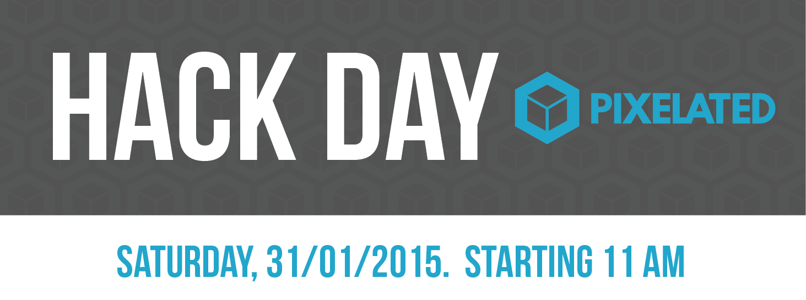

class: center, middle  <img src="img/leap-color-small.png" height="25%" width="25%" align="middle" /> # LEAP Platform Workshop slides are available at: https://pixelated-project.org/slides/hackday-berlin-platform.html --- ### Server Requirements - One Debian stable box, virtualized or bare metal - Remote or local (vagrant or other solutions) - 512mb ram, 15gb diskspace - Login possible via ssh as root ### Vagrant - Copy workshop vagratbox from network (http://192.168.5.104/) or usbstick ### Caching - For local boxes use caching proxy: http://192.168.5.104:8000 ### Documentation Links - [How to setup vagrant for LEAP](https://leap.se/en/docs/platform/development) - [Single node email tutorial](https://leap.se/en/docs/platform/tutorials/single-node-email) --- name: introduction ## Introduction ??? - Who are we - Thoughtworks / Pixelated / LEAP - We want to have an LEAP email provider running during this workshop ! --- ## Overview - Install LEAP email provider from scatch -- - Overview of LEAP platform software -- - Try pixelated-useragent or Bitmask against new provider -- - Troubleshooting / Questions -- - Hacking !1! ??? - leap deploy takes ~30 mins, we'll explain more about the platform --- template: default layout: true #### Preparation --- ## Get box ready ### Caching Use local caching proxy: http://192.168.5.104:8000 --- ## Vagrant Config Import workshop basebox ```bash vagrant box add hackday-platform hackday-platform.box ~/Downloads/hackday-platform.box ``` Create Vagrantfile ```bash vagrant init hackday-platform ``` ## Configure Vagrant Port-Forwarding ```ruby config.vm.network :forwarded_port, guest: 3333, guest_ip: '127.0.0.1', host: 3333 ``` --- ## Configure caching Install [vagrant-proxyconf](https://github.com/tmatilai/vagrant-proxyconf) plugin ```bash vagrant plugin install vagrant-proxyconf ``` Add this to your Vagrantfile ```ruby config.apt_proxy.http = "http://192.168.5.104:8000" ``` --- ## Start the box ```bash vagrant up ``` ### Log in ```bash vagrant ssh ``` After logging into your box, you should find this file: ```bash $ cat /etc/apt/apt.conf.d/01proxy Acquire::http::Proxy "http://192.168.5.104:8000"; ``` ??? - leap deploy will download a lot of debian packages - gems as well (but uses https) --- template: default layout: true #### Install LEAP --- ## Install LEAP Overview - Get server ready - Where to store the configuration - Install [leap_platform](https://leap.se/en/docs/platform/tutorials/single-node-email#Check.out.the.platform) and and the command line tool [leap_cli](https://leap.se/en/docs/platform/tutorials/single-node-email#Install.the.LEAP.command-line.utility) - Configure provider - Deploy configuration to server --- ## Let's go We'll follow the [LEAP Single node email tutorial](https://leap.se/en/docs/platform/tutorials/single-node-email) It boils down to these commands to set up a LEAP email provider: ```bash vagrant ssh mkdir -p ~/leap/example mv ~/leap_platform ~/leap/ cd ~/leap/example/ leap new . leap add-user --self leap cert ca leap cert csr /sbin/ifconfig leap node add node1 ip_address:<IP> services:couchdb,mx,soledad,webapp tags:production leap node init production leap deploy ``` - Use screen or tmux so you can do things while deploy is running ??? - Open tutorial in browser and continue until "leap deploy" --- ## Waiting...  ??? Show this slide when deployment is running --- template: default layout: true #### LEAP Platform --- ## More about the Platform - Puppet recipes - A lot of puppet modules - uses puppet hiera for node configuration data - Tries to use standard tools where possible (couchdb, postfix, gpg, …) - Installs and configures LEAP tools on top (leap_mx, nicknym, …) ??? - shared modules project - sane and secure default settings --- ## Leap MX - Running on mx server - Queries db to resolve aliases, encrypts and stores incoming emails to the user's db - Mail is stored encrypted completly, including headers <br> <br> .footnote[https://leap.se/git/leap_mx.git] --- ## Nicknym - Public key lookup, mapping nicknames to user keys - OpenPGP, OTR, X.509, RSA, etc. - federated protocol - Different Levels of trust: - TOFU first, i.e. lookup gpg keyservers - lookup DNSSEC / DANE entries - keys signed by own LEAP provider - Federated Web of trust bewtween different LEAP providers - Similar projects: [Nyms.io](http://nyms.io/), developed by [Subgraph](https://subgraph.com/sgos/secure-communication/index.en.html) .footnote[https://leap.se/de/docs/design/nicknym] --- ## Web App - Admin User Managment - Helpdesk for users - API for clients to communicate .footnote[https://leap.se/de/docs/design/webapp] --- ## Secure Remote Password - provider never has access to the password cleartext .footnote[https://en.wikipedia.org/wiki/Secure_Remote_Password_protocol] ??? ## SRP - no more lavabit ! --- ## Couchdb - Bigcouch, moving to Couchdb 2.0 soon - horizontally scaleable, document oriented NoSQL ## Soledad - client-encrypted storage - based on Ubuntu u1db - Sync to multiple devices - offline support .footnote[https://leap.se/de/docs/design/soledad] ??? ### couchdb - bigcouch merge ### soledad - keys and data is stored in soledad --- ## Provider Configuration ### Files of interest ``` Leapfile provider.json hiera/node1.yaml nodes/ tags/ users/ services/ ``` ## leap inspect ```bash leap inspect provider.json leap inspect files/ca/ca.crt ``` --- ??? ## LEAP Web API URLs https://192.168.121.51/1/config/soledad-service.json --- ??? ## SSH - standard vagrant ssh keypair is preinstalled on workshop box for the user vagrant After deploying, use this to login: ```bash ssh -i ~/.vagrant.d/insecure_private_key root@<IP> ``` ??? - this pubkey was added by the `leap add-user --self` cmd --- ## Fixing leap_mx ```bash sudo /etc/init.d/leap-mx restart ``` --- ## Testing ```bash *vagrant@leap-debian:~/leap/example$ leap test = [node1.example.org] PASS: Network > Can connect to internet? = [node1.example.org] PASS: Network > Is stunnel running? = [node1.example.org] PASS: Network > Is shorewall running? = [node1.example.org] PASS: CouchDB > Are daemons running? = [node1.example.org] PASS: CouchDB > Is CouchDB running? … = [node1.example.org] PASS: CouchDB > Can records be created? = [node1.example.org] PASS: Mx > Can contact couchdb? = [node1.example.org] PASS: Mx > Can contact couchdb via haproxy? = [node1.example.org] PASS: Mx > Are MX daemons running? = [node1.example.org] PASS: Soledad > Is Soledad running? = [node1.example.org] PASS: Webapp > Can contact couchdb? … = [node1.example.org] PASS: Webapp > Can create and authenticate and delete user via API? = [node1.example.org] PASS: Webapp > Can sync Soledad? = [node1.example.org] 20 tests: 20 passes, 0 skips, 0 warnings, 0 failures, 0 errors ``` --- # Something failing ? - See the [LEAP Troubleshooting documentation section](https://leap.se/en/docs/platform/troubleshooting) --- ## Setup DNS / local resolver Only needed if you want to access the platform from your local laptop, this is beeing setup during `leap deploy` on the server: Add this to /etc/hosts: ```bash x.x.x.w node1.example.org example.org api.example.org nicknym.example.org ``` --- template: default layout: true #### Pixelated Useragent --- ## Register User ```bash $ pixelated-user-agent --leap-cert ~/leap/example/files/ca/ca.crt \ --register example.org testuser1 ``` put this into /vagrant/pixelated.cfg: ```bash [pixelated] HOST=127.0.0.1 PORT=3333 LEAP_USERNAME=testuser1 LEAP_PASSWORD=... #LEAP_SERVER_NAME=staging.pixelated-project.org LEAP_SERVER_NAME=example.org ``` --- ## First run At the moment, you need to remove an existing ~/.leap folder before starting the useragen again: ```bash rm -rf ~/.leap/ pixelated-user-agent --host 0.0.0.0 \ --leap-cert ~/leap/example/files/ca/ca.crt \ --config /vagrant/pixelated.cfg ``` ## Send testmail ```bash apt-get install swaks swaks -f swaks@example.org -t testuser1@example.org -s example.org ``` --- ## Use the useragent UI Open this URL in your browser: ```bash http://localhost:3333 ``` Doesn't work ? Try disabling the firewall on the vagrantbox (only use for testing): ```bash sudo shorewall clear ``` --- template: default layout: true #### Etc --- ## LEAP Webapp ```bash https://example.org ``` --- ## Query keys ### Simple query for domain-internal keys using webapp: ```bash curl -sk https://example.org/key/testuser1 ``` ### Query nickserver: ```bash curl -sk -X POST -d address=testuser1@example.org https://example.org:6425 ``` or slightly easier ```bash curl -sk https://example.org:6425/?address=testuser1@example.org ``` Query 'foreign' key: ```bash curl -sk https://example.org:6425/?address=varac@leap.se ``` --- ## Bitmask - Currently only for Android (VPN only) and Debian/Ubuntu - Installation Details: https://bitmask.net/en/install - Userguide: https://leap.se/en/docs/client/user-running .footnote[https://leap.se/en/docs/client] --- # Want more ? ### Adding monitor service - Add "monitor" service to nodes/node1.json - deploy ```bash leap deploy ``` - Nagios is at https://example.org/nagios3/ --- ## Links https://pixelated-project.org/ https://leap.se made with [remark](https://github.com/gnab/remark), a simple, in-browser, markdown-driven slideshow tool